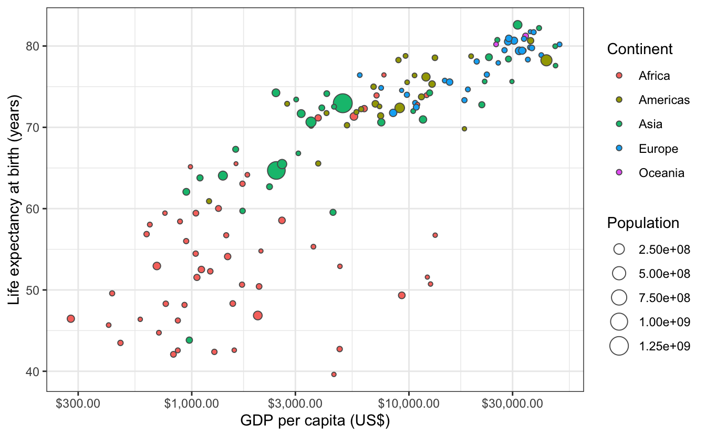
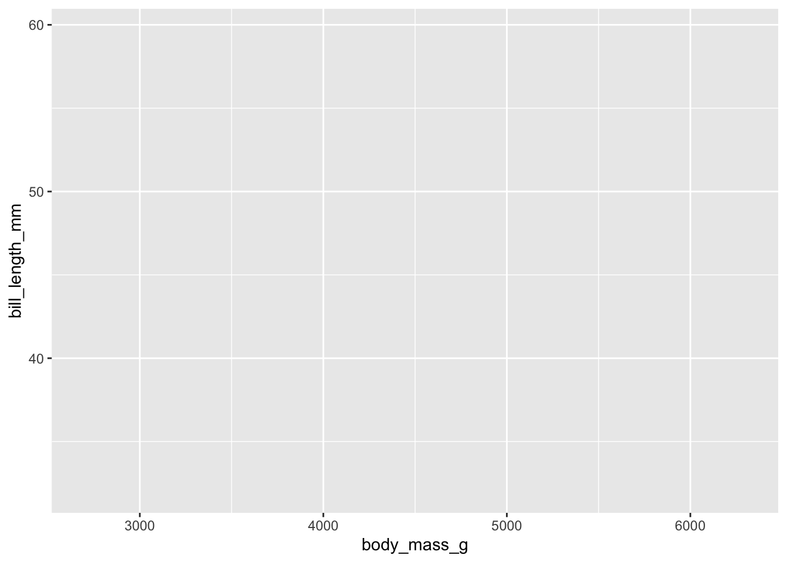
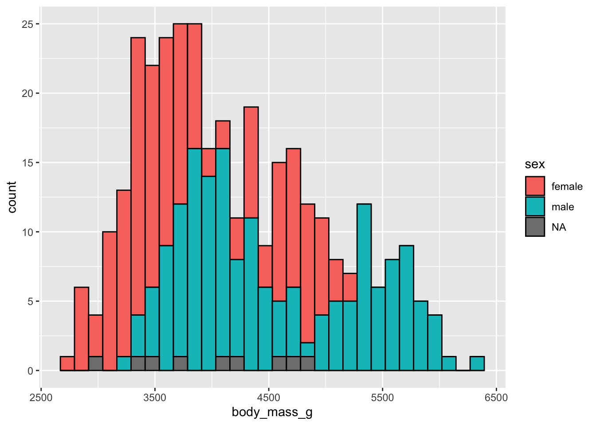

library(ggplot2)
library(dplyr)
library(palmerpenguins)3.1 Préambule
Dans le Chapitre 1 et le Chapitre 2, vous avez découvert les concepts essentiels qu’il est important de maîtriser avant de commencer à explorer en détail des données dans R. Les éléments de syntaxe abordés dans la Section 1.3 sont nombreux et vous n’avez probablement pas tout retenu. C’est pourquoi je vous conseille de garder les tutoriels de DataCamp à portée de main afin de pouvoir refaire les parties que vous maîtrisez le moins. Ce n’est qu’en répétant plusieurs fois ces tutoriels que les choses seront vraiment comprises et que vous les retiendrez. Ainsi, si des éléments de code présentés ci-dessous vous semblent obscurs, revenez en arrière : toutes les réponses à vos questions se trouvent probablement dans les chapitres précédents.
Après la découverte des bases du langage R, nous abordons maintenant les parties de ce livre qui concernent la “science des données” (ou “Data Science” pour nos amis anglo-saxons). Nous allons voir dans ce chapitre qu’outre les fonctions View() et glimpse(), l’exploration visuelle via la représentation graphique des données est un moyen indispensable et très puissant pour comprendre ce qui se passe dans un jeu de données.
Important
La visualisation de vos données devrait toujours être un préalable indispensable à toute analyse statistique.
La visualisation des données est en outre un excellent point de départ quand on découvre la programmation sous R, car ses bénéfices sont clairs et immédiats : vous pouvez créer des graphiques élégants et informatifs qui vous aident à comprendre les données. Dans ce chapitre, vous allez donc plonger dans l’art de la visualisation des données, en apprenant la structure de base des graphiques réalisés avec ggplot2 qui permettent de transformer des données numériques et catégorielles en graphiques.
Toutefois, la visualisation seule ne suffit généralement pas. Il est en effet souvent nécessaire de transformer les données pour produire des représentations plus parlantes. Ainsi, dans le Chapitre 4, vous découvrirez les fonctions clés qui vous permettront de sélectionner des variables importantes, de filtrer des observations, de créer de nouvelles variables, ou d’en modifier la forme.
Ce n’est qu’en combinant les transformations de données et représentations graphiques d’une part, avec votre curiosité et votre esprit critique d’autre part, que vous serez véritablement en mesure de réaliser une analyse exploratoire de vos données à la fois utile et pertinente. C’est la seule façon d’identifier des questions intéressantes sur vos données, afin de tenter d’y répondre par les analyses statistiques et la modélisation qui seront abordées lors des prochains semestres.
Dans ce chapitre, nous aurons besoin des packages suivants :
Si ce n’est pas déjà fait, pensez à les installer avant de les charger en mémoire.
Au niveau le plus élémentaire, les graphiques permettent de comprendre comment les variables se comparent en termes de tendance centrale (à quel endroit les valeurs ont tendance à être localisées, regroupées) et leur dispersion (comment les données varient autour du centre). La chose la plus importante à savoir sur les graphiques est qu’ils doivent être créés pour que votre public (le professeur qui vous évalue, le collègue avec qui vous collaborez, votre futur employeur, etc.) comprenne bien les résultats et les informations que vous souhaitez transmettre. Il s’agit d’un exercice d’équilibriste : d’une part, vous voulez mettre en évidence autant de relations significatives et de résultats intéressants que possible, mais de l’autre, vous ne voulez pas trop en inclure, afin d’éviter de rendre votre graphique illisible ou de submerger votre public. Tout comme n’importe quel paragraphe de document écrit, un graphique doit permettre de communiquer un message (une idée forte, un résultat marquant, une hypothèse nouvelle, etc).
Comme nous le verrons, les graphiques nous aident également à repérer les tendances extrêmes et les valeurs aberrantes dans nos données. Nous verrons aussi qu’une façon de faire, assez classique, consiste à comparer la distribution d’une variable quantitative pour les différents niveaux d’une variable catégorielle.
Objectifs
Dans ce chapitre, vous apprendrez à :
- faire différents types de graphiques exploratoires avec le package
ggplot2 - choisir le ou les graphiques appropriés selon la nature des variables dont vous disposez ou que vous souhaitez mettre en relation
- mettre vos graphiques en forme pour les intégrer dans vos rapports ou compte-rendus de TP
3.2 La grammaire des graphiques
Les lettres gg du package ggplot2 sont l’abréviation de “grammar of graphics” : la grammaire des graphiques. De la même manière que nous construisons des phrases en respectant des règles grammaticales précises (usage des noms, des verbes, des sujets et adjectifs…), la grammaire des graphiques établit un certain nombre de règles permettant de construire des graphiques : elle précise les composants d’un graphique en suivant le cadre théorique défini par Wilkinson (2005).
3.2.1 Éléments de la grammaire
En bref, la grammaire des graphiques nous dit que :
Un graphique est l’association (
mapping) de données/variables (data) à des attributs esthétiques (aesthetics) d’objets géométriques (geometric objects).
Pour clarifier, on peut disséquer un graphique en 3 éléments essentiels :
data: le jeu de données contenant les variables que l’on va associer à des objets géométriques. Pourggplot2les données doivent obligatoirement être stockées dans undata.frameou untibblegeom: les objets géométriques en question. Cela fait référence aux types d’objets que l’on peut observer sur le graphique (des points, des lignes, des barres, etc.)aes: les attributs esthétiques des objets géométriques présents sur le graphique. Par exemple, la position sur les axesxety, la couleur, la taille, la transparence, la forme, etc. Chacun de ces attributs esthétiques peut-être associé à une variable de notre jeu de données.
Examinons un exemple pour bien comprendre.
3.2.2 Gapminder
En février 2006, un statisticien du nom de Hans Rosling a donné un TED Talk intitulé “The best stats you’we ever seen”. Au cours de cette conférence, Hans Rosling présente des données sur l’économie mondiale, la santé et le développement des pays du monde. Les données sont disponibles sur ce site et dans le package gapminder.
Pour l’année 2007, le jeu de données contient des informations pour 142 pays. Examinons les premières lignes de ce jeu de données :
| Country | Continent | Life Expectancy | Population | GDP per Capita |
|---|---|---|---|---|
| Afghanistan | Asia | 43.828 | 31889923 | 974.5803 |
| Albania | Europe | 76.423 | 3600523 | 5937.0295 |
| Algeria | Africa | 72.301 | 33333216 | 6223.3675 |
| Angola | Africa | 42.731 | 12420476 | 4797.2313 |
| Argentina | Americas | 75.320 | 40301927 | 12779.3796 |
| Australia | Oceania | 81.235 | 20434176 | 34435.3674 |
Pour chaque ligne, les variables suivantes sont décrites :
Country: le paysContinent: le continentLife Expectancy: espérance de vie à la naissancePopulation: nombre de personnes vivant dans le paysGDP per Capita: produit intérieur brut (PIB) par habitant en dollars américains. GDP est l’abréviation de “Growth Domestic Product”. C’est un indicateur de l’activité économique d’un pays, parfois utilisé comme une approximation du revenu moyen par habitant.
Examinons maintenant la Figure 3.1 qui représente ces variables pour chacun des 142 pays de ce jeu de données (notez l’utilisation de la notation scientifique dans la légende, et de l’échelle logarithmique de l’axe des abscisses).

Si on décrypte ce graphique du point de vue de la grammaire des graphiques, on voit que :
- la variable
GDP per Capitaest associée à l’aestheticxde la position des points - la variable
Life Expectancyest associée à l’aestheticyde la position des points - la variable
Populationest associée à l’aestheticsize(taille) des points - la variable
Continentest associée à l’aestheticcolor(couleur) des points
Ici, l’objet géométrique (ou geom) qui représente les données est le point. Les données (ou data) sont contenues dans le tableau gapminder et chacune de ces variables est associée (mapping) aux caractéristiques esthétiques des points.
3.2.3 Autres éléments de la grammaire des graphiques
Outre les éléments indispensables évoqués ici (data, mapping, aes, et geom), il existe d’autres aspects de la grammaire des graphiques qui permettent de contrôler l’aspect des graphiques. Ils ne sont pas toujours indispensables. Nous en verrons néanmoins quelque-uns particulièrement utiles :
facet: c’est un moyen très pratique de scinder le jeu de données en plusieurs sous-groupes et de produire automatiquement un graphique pour chacun d’entre eux.position: permet notamment de modifier la position des barres d’un barplot.labs: permet de définir les titres, sous-titres et légendes des axes d’un graphiquetheme: permet de modifier l’apect général des graphiques en appliquant des thèmes prédéfinis ou en modifiant certains aspects de thèmes existants
3.2.4 Le package ggplot2
Comme indiqué plus haut, le package ggplot2 (Wickham et al. 2022) permet de réaliser des graphiques dans R en respectant les principes de la grammaire des graphiques. Vous avez probablement remarqué que depuis le début de la section Section 3.2, beaucoup de termes sont écrits dans la police réservée au code informatique. C’est parce que les éléments de la grammaire des graphiques sont tous précisés dans la fonction ggplot() qui demande, au grand minimum, que les éléments suivants soient spécifiés :
- le nom du
data.framecontenant les variables qui seront utilisées pour le graphique. Ce nom correspond à l’argumentdatade la fonctionggplot(). - l’association des variables à des attributs esthétiques. Cela se fait grâce à l’argument
mappinget la fonctionaes()
Après avoir spécifié ces éléments, on ajoute des couches supplémentaires au graphique grâce au signe +. La couche la plus essentielle à ajouter à un graphique, est une couche contenant un élément géométrique, ou geom (par exemple des points, des lignes ou des barres). D’autres couches peuvent s’ajouter pour spécifier des titres, des facets ou des modifications des axes et des thèmes du graphique.
Dans le cadre de ce cours, nous nous limiterons aux 4 types de graphiques suivants :
- les nuages de points
- les graphiques en lignes
- les histogrammes
- les diagrammes bâtons
3.2.5 Votre premier graphique
Reprenons maintenant le jeu de données penguins :
penguins# A tibble: 344 × 8
species island bill_length_mm bill_depth_mm flipper_…¹ body_…² sex year
<fct> <fct> <dbl> <dbl> <int> <int> <fct> <int>
1 Adelie Torgersen 39.1 18.7 181 3750 male 2007
2 Adelie Torgersen 39.5 17.4 186 3800 fema… 2007
3 Adelie Torgersen 40.3 18 195 3250 fema… 2007
4 Adelie Torgersen NA NA NA NA <NA> 2007
5 Adelie Torgersen 36.7 19.3 193 3450 fema… 2007
6 Adelie Torgersen 39.3 20.6 190 3650 male 2007
7 Adelie Torgersen 38.9 17.8 181 3625 fema… 2007
8 Adelie Torgersen 39.2 19.6 195 4675 male 2007
9 Adelie Torgersen 34.1 18.1 193 3475 <NA> 2007
10 Adelie Torgersen 42 20.2 190 4250 <NA> 2007
# … with 334 more rows, and abbreviated variable names ¹flipper_length_mm,
# ²body_mass_gComme évoqué plus haut, il s’agit d’un tibble. Plusieurs de ses variables concernent la biométrie des manchots, en particulier de son bec (voir Figure 3.2).

Supposons qu’on cherche à déterminer si la longueur du bec des manchots est proportionnelle à leur masse. Pour produire un graphique permettant de le déterminer, nous avons besoin des éléments suivants :
data: le tableaupenguins- un objet géométrique, ici, des points (
geom_point()) puisque nous disposons de 2 variables numériques (plus de détails à ce sujet plus bas) - l’association de certaines variables du jeu de données (ici,
body_mass_getbill_length_mm) à certaines caractéristiques esthétiques du graphiques (ici, la position sur les axes desxet desy), grâce à l’argumentmappinget la fonctionaes().
Concrètement, voilà le code qu’il faut taper dans votre script :
ggplot(data = penguins, mapping = aes(x = body_mass_g, y = bill_length_mm))
Cette première ligne de code permet de faire plusieurs choses :
- on indique à
Rqu’on souhaite faire un graphique (avec la fonctionggplot()) - on indique à
Rque les données sont contenues dans l’objetpenguinsavecdata = penguins - on associe (avec
mapping =la variablebody_mass_gà l’axe desxet la variablebill_length_mmà l’axe desy. On fait cela grâce àaes(x = body_mass_g, y = bill_length_mm)
Cette commande génère la première couche du graphique. Il n’y a pas encore de données car nous n’avons pas indiqué quel type d’objet géométrique nous souhaitons afficher, mais la fenêtre graphique est bel et bien créée, les axes apparaissent, ils sont légendés et leur échelle est adaptée aux variables du tableau penguins que nous avons sélectionnées. Pour terminer le graphique, il nous faut donc ajouter une seconde couche, celle de l’objet géométrique :
ggplot(data = penguins, mapping = aes(x = body_mass_g, y = bill_length_mm)) +
geom_point()Warning: Removed 2 rows containing missing values (geom_point).
Au moment de produire ce graphique, R nous indique que 2 lignes du tableau penguins ne figurent pas sur ce graphique car elles possèdent des données manquantes (NA), pour l’une et/ou l’autre des variables que nous avons sélectionnées. La fonction geom-point() est donc incapable de les placer sur le graphique.
Vous avez donc ici un premier exemple de graphique très simple. Il est loin d’être parfait (à minima, le titre des axes devrait être modifié), mais il a le mérite de vous présenter la syntaxe que vous devrez utiliser pour produire presque tous les graphiques qui vous seront utiles avec ggplot2. En outre, on peut percevoir qu’il semble exister une relation positive (mais imparfaite) entre longueur des becs et masse des individus. Il faut toutefois être prudent car nous avons ici utilisé toutes les données disponibles (donc les données des 3 espèces à la fois), ce qui est loin d’être pertinent.
En résumé
- Au sein de la fonction
ggplot(), on spécifie 2 composants de la grammaire des graphiques :- le nom du tableau contenant les données grâce à l’argument
data = penguins - l’association (
mapping) des variables du tableau de données à des caractéristiques esthétiques (aes()) en précisantaes(x = body_mass_g, y = bill_length_mm):- la variable
body_mass_gest associée à l’esthétique de positionx - la variable
bill_length_mmest associée à l’esthétique de positiony
- la variable
- le nom du tableau contenant les données grâce à l’argument
- On ajoute une couche au graphique
ggplot()grâce au symbole+. La couche en question précise le troisième élément indispensable de la grammaire des graphiques : l’objetgeométrique. Ici, les objets sont despoints. On le spécifie grâce à la fonctiongeom_point().
Quelques remarques concernant les couches :
- Notez que le signe
+est placé à la fin de la ligne. Vous recevrez un message d’erreur si vous le placez au début. - Quand vous ajoutez une couche à un graphique, je vous encourage vivement à presser la touche
enterde votre clavier juste après le symbole+. Ainsi, le code correspondant à chaque couche sera sur une ligne distincte, ce qui augmente considérablement la lisibilité de votre code. - Comme indiqué dans la Section 1.3.4.3, tant que les arguments d’une fonction sont spécifiés dans l’ordre, on peut se passer d’écrire leur nom. Ainsi, les deux blocs de commande suivants produisent exactement le même résultat :
# Le nom des arguments est précisé
ggplot(data = penguins, mapping = aes(x = body_mass_g, y = bill_length_mm)) +
geom_point()
# Le nom des arguments est omis
ggplot(penguins, aes(x = body_mass_g, y = bill_length_mm)) +
geom_point()3.2.6 Exercices
- Donnez une raison pratique expliquant pourquoi les variables
body_mass_getbill_length_mmont une relation positive - Quelles variables (pas nécessairement dans le tableau
penguins) pourraient avoir une corrélation négative (relation négative) avecbody_mass_g? Pourquoi ? Rappelez-vous que nous étudions ici des variables numériques. - Citez les éléments de ce graphique/de ces données qui vous sautent le plus aux yeux ?
- Créez un nouveau nuage de points en utilisant d’autres variables du jeu de données
penguins
3.3 Quel graphique dans quelle situation ?
Il n’est pas possible de faire n’importe quel type de graphique dans n’importe quelle situation. Selon le nombre de variable dont on dispose ou que l’on souhaite examiner, et selon la nature de ces variables (numériques ou catégorielles), le choix des types de graphiques possibles sera limité. Par exemple, les diagrammes bâtons sont réservés aux variables catégorielles, alors que les histogrammes sont possibles uniquement avec les variables numériques continues. Néanmoins, dans certaines situations, plusieurs choix de graphiques seront possibles, et vous aurez donc une certaine liberté. Vos choix seront alors guidés par les objectifs que vous souhaiterez atteindre grâce aux graphiques, ainsi que par vos préférences.
Objectifs
Dans la suite de ce chapitre, nous traiterons donc des situations les plus courantes : quel(s) type(s) de graphique(s) produire lorsque l’on dispose d’une, deux ou trois variables ? Quel(s) type(s) de graphique(s) produire lorsque les variables sont toutes numériques, toutes catégorielles, ou lorsqu’on dispose de variables des deux types ?
Pour chaque situation, un ou des exemples seront fournis à partir des données du tableau penguins. Cela sera aussi l’occasion de présenter quelques subtilités liées à l’utilisation du package ggplot2.
3.4 Une seule variable numérique
Lorsque l’on souhaite examiner une unique variable numérique, deux types de représentations graphiques sont en général possible :
- les histogrammes : la variable d’intérêt est placée sur l’axe des
xdu graphique. Les valeurs utilisées sur l’axe desyest calculée automatiquement par le logiciel. - les nuages de points : la variable d’intérêt est placée sur l’axe des
y. L’axe desxporte soit un simple numéro d’indice pour chaque observation, soit une unique valeur sans importance.
Les syntaxes et options pour ces 2 types de graphiques sont présentées ci-dessous.
3.4.1 Les histogrammes
3.4.1.1 Syntaxe élémentaire
Imaginons que l’on s’intéresse à la variable body_mass_g du jeu de données penguins.
La syntaxe permettant de produire un histogramme, sous sa forme la plus simple, est la suivante :
ggplot(penguins, aes(x = body_mass_g)) +
geom_histogram()`stat_bin()` using `bins = 30`. Pick better value with `binwidth`.Warning: Removed 2 rows containing non-finite values (stat_bin).
Deux messages nous sont adressés :
Message d'avis: Removed 2 rows containing non-finite values (stat_bin). Ce message indique, comme pour le premier nuage de points, que 2 individus du tableaupenguinsont une masse corporelle inconnue (NA). Ces 2 individus (donc les deux lignes correspondantes), ont été ignorés pour produire ce graphique'stat_bin()' using 'bins = 30'. Pick better value with 'binwidth'. Ce message indique queRa choisi pour nous les limites des classes utilisées pour faire l’histogramme. Sur un histogramme, la variable d’intérêt (toujours numérique et continue), qui apparaît sur l’axe des abscisses, est en effet “découpée” en plusieurs classes, en général de même taille, afin de permettre une représentation de la distribution des valeurs. Ici,Rindique qu’il a créé 30 catégories pour nous, et que nous pouvons faire un choix différent grâce à l’argumentbinwidth. Nous y reviendrons un peu plus loin.
3.4.1.2 Couleur
Pour rendre ce graphique plus facilement lisible, on peut en modifier la couleur :
- la couleur de remplissage des barres peut-être spécifiée grâce à l’argument
fill = - la couleur de contour des barres peut-être spécifiée grâce à l’argument
color =
Une liste des couleurs disponibles dans R peut être affichée dans la console en tapant :
colors()Vous pouvez voir à quelle couleur correspond chacun de ces noms dans ce document pdf.
Mettons à jour notre histogramme en ajoutant un peu de couleur :
ggplot(penguins, aes(x = body_mass_g)) +
geom_histogram(fill = "steelblue", color = "black")`stat_bin()` using `bins = 30`. Pick better value with `binwidth`.Warning: Removed 2 rows containing non-finite values (stat_bin).
Les 30 classes de masses sont maintenant bien plus visibles.
3.4.1.3 À l’intérieur ou à l’extérieur de aes() ?
Les couleurs de remplissage et de contour des barres d’un histogramme font partie des caractéristiques esthétiques du graphique. Pourtant, elles ne sont pas précisées à l’intérieur de la fonction aes(). La raison est simple mais importante :
Important
On place à l’intérieur de aes() uniquement les caractéristiques esthétiques du graphique que l’on souhaite associer à des variables du jeu de données.
Ici, les couleurs que l’on indique sont des constantes : toutes les barres ont les mêmes couleur de remplissage et de contour. On n’associe pas une variable du jeu de données à ces caractéristiques esthétiques. On place donc fill = et color = à l’extérieur de aes(). Si on se trompe, voilà ce qui se produit :
ggplot(penguins, aes(x = body_mass_g)) +
geom_histogram(aes(fill = "steelblue", color = "black"))`stat_bin()` using `bins = 30`. Pick better value with `binwidth`.Warning: Removed 2 rows containing non-finite values (stat_bin).
Les couleurs qui apparaissent ne correspondent pas à ce qui est demandé, et une légende ne correspondant à rien apparaît à droite du graphique. La syntaxe utilisée ici suppose en effet que "steelblue" et "black" seraient des variables du jeu de données penguins. Puisqu’elles n’existent pas, R essaie de se débrouiller pour interpréter comme il peut ce qu’on lui demande, et finit par produire ce graphique incohérent. La couleur utilisée est la première couleur de la palette par défaut de ggplot2.
Pour élaborer des graphiques plus avancés, il faudra donc toujours vous poser la question suivante : la caractéristique esthétique que je souhaite modifier doit-elle être associée à une valeur constante que je fixe pour toutes les barres ou tous les points d’un graphique (et alors, je l’indique en dehors de aes()), ou est-elle au contraire associée à une variable de mon jeu de données (et alors, je l’indique à l’intérieur de aes()).
Il est bien sûr possible d’avoir un mélange des deux. Par exemple, le code suivant permet d’associer la couleur de remplissage au sexe des individus étudiés (variable sex du jeu de données penguins), et de spécifier une valeur constante pour la couleur de contour des barres (ici, le noir) :
ggplot(penguins, aes(x = body_mass_g)) +
geom_histogram(aes(fill = sex), color = "black")`stat_bin()` using `bins = 30`. Pick better value with `binwidth`.Warning: Removed 2 rows containing non-finite values (stat_bin).
On constate que toutes les barres ont un contour noir, mais que plusieurs couleurs de remplissage apparaissent maintenant, selon le sexe des individus, dans chaque classe de masse. On apprend ainsi que les individus les plus lourds sont tous des mâles. On constate également que le sexe de certains individus est inconnu.
Au final, nous ne sommes déjà plus dans la situation où on examine une unique variable numérique. Nous avons en effet ici un graphique nous permettant de mettre en relation une variable numérique (la masse des individus en grammes) et une variable catégorielle (le sexe des individus). Nous reviendrons plus tard sur ce type de graphiques.